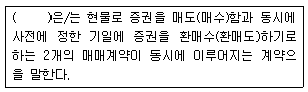
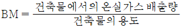
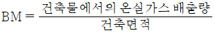
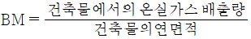
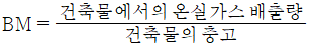
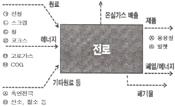
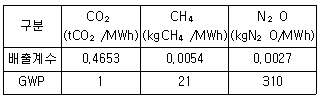
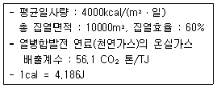
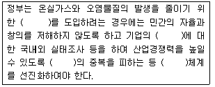
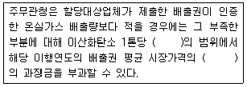

온실가스관리기사 (2015-09-19 기출문제)
1과목: 기후변화개론
1. 유엔기후변화협약(UNFCCC)의 주요기준이 되는 원칙으로 가장 거리가 먼 것은?
- 과학적 확실성의 원칙
- 공통이지만 차별화된 책임의 원칙
- 각자 능력의 원칙
- 사전예방의 원칙
(정답률: 80%)

2. 다음 중 국내 5가지 온실가스 배출분야에서 배출량이 가장 많은 분야는?
- 산업공정
- 에너지
- 폐기물
- LULUCF
(정답률: 알수없음)
3. 지구의 복사평형에 관한 설명으로 가장 거리가 먼 것은?
- 지구에 입사되는 태양복사에너지 중 대기분자의 산란으로 25% 구름의 반사가 3%, 지표면의 반사가 2% 정도로서 30%의 알베도를 가진다.
- 대기권에 흡수된 에너지 70%는 대기분자에 의해 16%, 구름에 의한 흡수 3%, 지표면이 흡수하는 태양에너지의 양 50% 정도이다.
- 반사되지 않고 지구에 흡수되는 70% 정도의 에너지가 지구온도에 직접적인 원인이 된다.
- 지구복사와 관련된 용어 중 알베도는 입사레너지에 대한 반사에너지의 비로 나타낸다.
(정답률: 80%)
4. 21세기에 발생할 것으로 예상되는 이상기후 현상으로 가장 거리가 먼 것은?
- 보다 집중적인 호우
- 중위도 지역 폭풍의 강도 증가
- 대부분 중위도 내륙에서의 혹서피해와 한발 위험 증가
- 최고 기온의 하강, 무더운 일수와 혹서기간의 감소
(정답률: 100%)
5. 정부가 2009년 11월 확정하여 발표한 국가 온실가스 감축목표는 2020년까지 BSU 배출전망치 대비 몇 % 감축목표를 유지하기로 했는가?
- 5%
- 10%
- 20%
- 30%
(정답률: 알수없음)
6. 우리나라의 기후변화 평가방법과 관련된 사항으로 가장 거리가 먼 것은?
- 취약성 평가는 영향에 대한 가치판단이 들어가 있는 개념이다.
- 취약성 평가는 과학적 불확실성을 철저히 배제된다.
- 하향식 접근법은 영향평가를 통한 물리적 취약성을 평가하는 것이다.
- 상향식 접근법은 적응능력 평가를 통한 사회경제적 취약성을 파악하는 것이다.
(정답률: 100%)
7. 주요국의 배출권 거래제도에 관한 설명으로 옳지 않은 것은?
- RGGI는 미국 북동부 및 대서양 연안 중부지역 주에서 시행한 배출권 거래제도로서 2009년 1월부터 시작되어 미국 최초로 강제적인 감축의무가 시행되는 프로그램이다.
- WCI와 MGGA는 미국과 캐나다 주정부간의 국경을 뛰어넘는 협정이다.
- 일본은 2002년 Baseline-and-Credit 방식인 자발적 배출권 거래제도인 JVETS를 도입하여 큰 성과를 보였다.
- 일본의 JVETS 제도는 일정량의 온실가스 감축을 달성한 참가자에게 CO2 배출감소시설의 설치비를 보조하는 제도였다.
(정답률: 82%)
8. 기후변화관련 국제기구 중 UN조직 내 환경활동을 촉진, 조정, 활성화하기 위해 설립된 환경전담 국제정부간 기구로 환경문제에 대한 국제적 협력을 도모하기 위한 기구로 가장 적합한 것은?
- WCRP
- UNIDO
- UNDP
- UNEP
(정답률: 100%)
9. 우리나라 녹색성장 국가전략의 10대 정책목표와 가장 거리가 먼 것은?
- 효율적 온실가스 감축
- 탈석유 에너지 자립 강화
- 산업구조의 고도화
- 지속가능한 소비발전역량 강화
(정답률: 62%)
10. 기후변화에 관한 정부간 협의체(IPCC)가 다루지 않는 분야는?
- 기후변화 과학
- 배출량 거래제
- 기후변화 영향평가, 적응 및 취약성
- 배출량 완화, 사회 경제적 비용-편익분석 등 정책
(정답률: 93%)
11. 다음 중 기후를 결정하는 가장 중요한 외부요인은?
- 태양복사에너지
- 인간의 소비패턴 변화
- 생태계의 변화
- 물과 탄소순환
(정답률: 알수없음)
12. 한국의 2020년도 온실가스 배출전망치와 목표감축률(%)이 대분류기준으로 가장 많은 부문끼리 옳게 짝지어진 것은? (단, 대분류는 전환, 산업, 수송, 건물, 공공기타, 농림어업, 폐기물 등 7개 부문으로 구분)
- 배출전망치-전환부문, 감축률-산업부문
- 배출전망치-산업부문, 감축률-수송부문
- 배출전망치-건물부문, 감축률-전환부문
- 배출전망치-수송부문, 감축률-건물부문
(정답률: 100%)
13. 기후체제가 위험한 인위적 간섭을 받지 않을 수준으로 대기 중 온실가스 농도를 안정화하는 것을 궁극적 목표로 삼으며, 유엔환경개발회의에서 채택한 것은?
- UNFCCC
- UNIICED
- UNEP
- IPCC
(정답률: 85%)
14. 한국정부가 범국가적인 관점에서 기후변화문제에 대한 관심을 표명하기 시작한 것은 언제부터인가?
- 1992년 기후변화협약에 서명 이후
- 1998년 ‘기후변화협약 범정부 대택기구’ 구성 이후
- 2007년 ‘기후변화 대책기획단’ 신설 이후
- 2009년 ‘저탄소 녹색성장기본법’ 제정 이후
(정답률: 알수없음)
15. 유엔기후변화협약의 기본원칙으로 가장 거리가 먼 것은?
- 공동의 차별화된 책임 및 부담
- 개도국의 특수 사정 배려
- 기후변화 대응의 효과가 큰 특정 국가중심의 지속가능한 성장 보장
- 기후변화의 예방적 조치 시행
(정답률: 73%)
16. 다음 온실가스에 관한 설명으로 옳지 않은 것은?
- 온실가스는 지표면에서 대기중으로 방출되는 복사열을 흡수하여 지구기온이 상승하는 온실효과를 야기하는 기체로 정의된다.
- CO2의 주요 배출원은 연료사용이나 산업공정이다.
- CH4는 다른 물질과 반응해야만 온실가스로 전환될 수 있는 간접 온실가스이다.
- N2O는 화학산업의 공정, 에너지의 연소를 통해서 발생된다.
(정답률: 100%)
17. 탄소배출권 계약에 관한 설명 중 다음 ()에 알맞은 것은?

- 레포
- 현물
- 선도
- 옵션
(정답률: 알수없음)
18. 한국의 지구온난화 현상에 관한 설명으로 가장 거리가 먼 것은?
- 최근 100년간(1909년~2008년) 한국의 평균기온이 약 0.74℃ 정도 상승했다.
- 최근 100년간의 데이터를 비교 시 한국의 온난화는 지구온난화보다 2.5배 정도 더 크다고 할 수 있다.
- 최근 40년간(1969년~2008년)의 한국의 온난화는 약 1.44℃ 정도이다.
- 한국은 과거보다 온난화가 더 빠르게 진행되고 있다.
(정답률: 79%)
19. 온실가스에 관한 설명으로 옳지 않은 것은?
- 육불화황은 전기제품이나 변압기 등의 절연체로 사용된다.
- 수수불화탄소와 과불화탄소는 CFCs의 대체물질로 냉매, 소화기 등에 주로 사용된다.
- 이산화탄소는 탄소 성분과 대기중의 산소가 결합되는 연소 반응에 의해 발생한다.
- 아산화질소는 온실가스 중에서 가장 높은 비중을 차지하고 있다.
(정답률: 알수없음)
20. 다음 중 UNFCCC에서 규제하고 있는 온실가스가 아닌 것은?
- 수소불화탄소
- 이산화질소
- 육불화황
- 과불화탄소
(정답률: 100%)
2과목: 온실가스 배출의 이해
21. 합금철 생산에서 전기아크로에 투입되는 원료로 볼 수 없는 것은? (단, 온실가스ㆍ에너지 목표관리 운영 등에 관한 지침 기준)
- 철스크랩
- 석회
- 슬랙
- 흑연전극
(정답률: 64%)
22. 온실가스ㆍ에너지 목표관리 운영 등에 관한 지침에서 석유화학제품 생산에 포함되지 않는 것은? (단, 온실가스ㆍ에너지 목표관리 운영 등에 관한 지침 기준)
- 메탄올 생산
- 암모니아 생산
- 에틸렌 옥사이드 생산
- 아크릴로니트릴 생산
(정답률: 100%)
23. 혐기성 소화조의 소화효율 저하 원인과 가장 거리가 먼 것은? (단, 온실가스ㆍ에너지 목표관리 운영 등에 관한 지침 기준)
- pH저하
- 알칼리도 유입
- 조화조 내 온도저하
- 낮은 유기물 함량
(정답률: 알수없음)
24. 온실가스 배출시설의 종류 및 이동연소 도로 차량에 해당하지 않는 것은? (단, 온실가스ㆍ에너지 목표관리 운영 등에 관한 지침 기준)
- 승용자동차
- 무동력 자전거
- 화물자동차
- 농기계
(정답률: 알수없음)
25. 수송연료로 사용될 수 있는 바이오연료에 대한 설명으로 틀린 것은? (단, 온실가스ㆍ에너지 목표관리 운영 등에 관한 지침 기준)
- 수송용 바이오연료는 액체형과 가스형으로 분류된다.
- 바이오에탄올은 가솔린의 옥탄가를 높이는 첨가제로 주로 사용된다.
- 바이오디젤은 식물성 기름으로서 석유계 디젤과 혼합하여 사용한다.
- 우리나라에서는 2015년 현재 바이오디젤로서 BD25가 판매되고 있다.
(정답률: 55%)
26. 옥탄가가 낮은 경질유분의 탄화수소 구조를 바꾸어 옥탄가가 높은 유분으로 변환시키는 공정은? (단, 온실가스ㆍ에너지 목표관리 운영 등에 관한 지침 기준)
- 메록스
- 수첩탈황
- 리포오밍
- 감압증류
(정답률: 80%)
27. 폐기물 소각 배출시설과 가장 거리가 먼 것은? (단, 온실가스ㆍ에너지 목표관리 운영 등에 관한 지침 기준)
- 폐열 보일러
- 적출물 소각시설
- 폐가스 소각시설
- 폐수 소각시설
(정답률: 알수없음)
28. 시멘트 제조공정의 소성공정을 바르게 나열한 것은? (단, 온실가스ㆍ에너지 목표관리 운영 등에 관한 지침 기준)
- 예열기-소성로-냉각기-크링커 치장
- 예열기-소성로-크링커 치장-냉각기
- 크링커 치장-예열기-소성로-냉각기
- 예열기-크링커 치장-소성로-냉각기
(정답률: 59%)
29. 온실가스 배출시설 중 고정연소 배출시설이 아닌 것은? (단, 온실가스ㆍ에너지 목표관리 운영 등에 관한 지침 기준)
- 열병합 발전시설
- 일반 보일러시설
- 공정연소시설
- 수상황해시설
(정답률: 82%)
30. 수송부문의 가솔린엔진 온실가스 감축을 위한 최적가용기술 중 틀린 것은? (단, 온실가스ㆍ에너지 목표관리 운영 등에 관한 지침 기준)
- 실린더 일부의 전원을 끄거나 작동을 정지시켜 펌핑 손실을 줄이는 실린더 디액티베이션
- 한 번 배출된 배기가스를 다시 흡입공기와 혼합하여 연소온도를 저하시켜 NOx를 저감시키는 배기가스 재순환
- 고압 기계식 펌프로 연료를 미립화하여 분사, 연소효율을 개선시키는 직접분사
- 연소실 내의 여러 곳에서 혼합기 온도, 압력 및 조성에 따라 자발적으로 연소되어 열 손실률을 컨트롤하는 예혼합 압축착화
(정답률: 알수없음)
31. 배연탄황시설의 반응 중 생성되는 물질이 아닌 것은? (단, 온실가스ㆍ에너지 목표관리 운영 등에 관한 지침 기준)
- CaSO3(아황산칼슘)
- CaSO42H20(석고)
- CaO(산화칼슘)
- H2SO3(아황산)
(정답률: 84%)
32. 건축물의 벤치마크(BM) 계수의 유형 개발을 위한 산정식으로 맞는 것은? (단, 온실가스ㆍ에너지 목표관리 운영 등에 관한 지침 기준)




(정답률: 80%)
33. 철강 생산의 공정을 순서대로 나열한 것은? (단, 온실가스ㆍ에너지 목표관리 운영 등에 관한 지침 기준)
- 재선공정-제강공정-연주공정-압연공정
- 제선공정-제강공정-압연공정-연주공정
- 제강공정-제선공정-연주공정-압연공정
- 제강공정-제선공정-압연공정-연주공정
(정답률: 70%)
34. 석회 생산 공정(산업)에 대한 설명으로 가장 거리가 먼 것은? (단, 온실가스ㆍ에너지 목표관리 운영 등에 관한 지침 기준)
- 석회 소성 공정 중 킬른 내 3단계의 열전달과정은 예열구역, 소성구역, 냉각구역이 있다.
- 생석회 공정은 ROK(Run of Kiln) 공정 및 분쇄 생석회 공정으로 구분한다.
- 석회 생산 산업은 에너지 집약적인 산업으로 에너지의 선택이 중요한데, 바이오매스 연료의 사용으로 화석연료를 줄일 수 있다.
- 폐기물연료는 화석연료의 사용을 감소시켜주나 CO2 배출량을 증가시킨다.
(정답률: 알수없음)
35. 고형폐기물의 배출시설 분류중 생물학적 처리시설에 해당하지 않는 것은? (단, 온실가스ㆍ에너지 목표관리 운영 등에 관한 지침 기준)
- 사료화 시설
- 매립시설
- 부숙토 생산시설
- 퇴비화 시설
(정답률: 80%)
36. Fe 촉매를 사용하는 수증기 개질법으로 암모니아를 합성할 때 수소와 질소의 비율은? (단, 온실가스ㆍ에너지 목표관리 운영 등에 관한 지침 기준)
- 1:1
- 2:1
- 3:1
- 4:1
(정답률: 알수없음)
37. 다음 그림은 철강공정에서 전로의 물질ㆍ네어지수지이다. 원료, 에너지, 기타원료, 제품에 해당하는 것으로 틀린 것을 모두 고른 것은? (단, 온실가스ㆍ에너지 목표관리 운영 등에 관한 지침 기준)

- ㉠, ㉡, ㉨
- ㉡, ㉦, ㉩
- ㉥, ㉧
- ㉦, ㉨
(정답률: 72%)
38. 제품 등의 생산공정에 사용되는 특정시설에 열을 제공하거나 장치로부터 멀리 떨어져 이용하기 위해 연료를 의도적으로 연소시키는 시설은? 단. 온실가스ㆍ에너지 목표관리 운영 등에 관한 지침 기준)
- 공정배출시설
- 대기오염물질 방지시설
- 일반보일러 시설
- 공정연소시설
(정답률: 알수없음)
39. ketone-Alcohol Oil (cyclohexanone : Cyclohexanol=6:4)을 질산과 반응시킨 후 결정 및 정제, 건조 공정을 통해서 생산되는 물질은? (단, 온실가스ㆍ에너지 목표관리 운영 등에 관한 지침 기준)
- 암모니아
- 우레아
- 요소
- 아디프산
(정답률: 80%)
40. 아연생산 배출시설 중 광석이 융해되지 않을 정도의 온도에서 광석과 산소, 수증기, 탄소, 염화물 또는 염소 등을 상호작용 시켜서 다음 제련조작에서 처리하기 쉬운 화합물로 변화시키거나 어떤 성분을 기화시켜 제거하는 데 사용되는 로는? 단. 온실가스ㆍ에너지 목표관리 운영 등에 관한 지침 기준)
- 용융로
- 전해로
- 용해로
- 배소로
(정답률: 알수없음)
3과목: 온실가스 산정과 데이터 품질관리
41. 온실가스ㆍ에너지 목표관리제 하에서 배출량 산정(명세서 작성등) 과정에 직접적으로 관여하지 않은 사람에 의해 수행되는 검토 절차의 계획도니 시스템에 가장 가까운 것은?
- 품질관리(QC)
- 품질보증(QA)
- 리스크분석
- 불확도산정
(정답률: 알수없음)
42. 온실가스ㆍ에너지 목표관리제 하에서 ‘탄산염의 기타 공정사용’에서 Tier 2활동자료에 대한 측정불확도 기준은?
- ±9.5% 이내
- ±7.5% 이내
- ±5.0% 이내
- .±2.5% 이내
(정답률: 80%)
43. 온실가스ㆍ에너지 목표관리제 하에서 이동연소(항공) 온실가스 배출량 산정을 위한 LTO에 관한 설명으로 가장 적합한 것은?
- 항공기 운항 중 순항단계를 의미한다.
- 항공기 운항 중 이착륙단계를 의미한다.
- 항공기 운항 중 국제선 운항을 의미한다.
- 항공기 운항 중 국내선 운항을 의미한다.
(정답률: 91%)
44. 온실가스ㆍ에너지 목표관리제 하에서 고상폐기물의 소각 과정에서 이산화탄소 배출량을 산정하기 위한 매개변수에 해당되지 않는 것은?
- 폐기물 성상(i)별 건조물질 질량 분율
- 화석탄소 질량 분율
- 산화계수
- 순발열량
(정답률: 83%)
45. 온실가스ㆍ에너지 목표관리제 하에서 외부에서 공급된 전기사용에 의한 배출량 산정에 관한 설명으로 옳지 않은 것은?
- 활동자료는 Tier 2를 적용하여 산정한다.
- 간접배출량은 CO2만 산정한다.
- 관리업체의 조직경계 내에 발전설비가 위치하여 생산된 전력을 자체적으로 사용할 경우에는 간접배출량 산정에서 제외한다.
- 배출계수는 3년간 고정하여 적용한다.
(정답률: 알수없음)
46. 온실가스ㆍ에너지 목표관리제 하에서 연속측정에 따른 배출량 산정방법 중 생성기준에 대한 설명으로 옳지 않은 것은?
- 장비점검 기간에는 정상 자료 중 최근 30분 평균자료를 이용한다.
- 비정상 측정자료는 정상 자료 중 최근 30분 평균자료를 이용한다.
- 가동중지 기간에는 정상 마감된 전월의 최근 1개월간의 30분 평균자료를 이용한다.
- 정도검사 기간에는 정상 마감된 전월의 최근 1개월간의 30분 평균자료를 이용한다.
(정답률: 40%)
47. 온실가스ㆍ에너지 목표관리제 하에서 외부에서 공급을 받아 사용하는 전력을 사용하는 A사업장은 2013년에 10⑤00kWh, 2014년 110600kWh를 사용하였다. A 사업장이 2014년 외부전력 사용으로 인한 온실가스 배출량은 약 얼마인가? (단, 전력 배출계수 및 GWP는 다음과 같다.)

- 47tCO2-eq
- 52tCO2-eq
- 62tCO2-eq
- 73tCO2-eq
(정답률: 알수없음)
48. 온실가스ㆍ에너지 목표관리제 하에서 시멘트 생산과정에서 배출되는 온실가스의 발생 반응식으로 가장 적합한 것은?
- CaCO3+H2SO4→CaSO4+CO2+H2O
- 2HaHCO3+Heat→Na2CO3+CO2+H2O
- CH4+2O2→CO2+2H2O
- CaCO3+Heat→CaO+CO2
(정답률: 70%)
49. 온실가스ㆍ에너지 목표관리제 하에서 활동자료 수집에 따른 모니터링 유형 중 근사법에 따른 모니터링 유형은?
- A 유형
- B 유형
- C 유형
- D 유형
(정답률: 70%)
50. 온실가스ㆍ에너지 목표관리제 하에서 상거래 또는 증명에 사용하기 위한 목적으로 측정량을 결정하는 법정계량에 사용하는 측정기기를 표시하는 기호는?
(정답률: 알수없음)
51. 온실가스 배출권거래제 운여을 위한 검증지침에서 온실가스 검증심사원등의 업무 및 역할에 대한 설명으로 가장 거리가 먼 것은?
- 온실가스 검증심사원은 명세서 검증절차를 준수하여 검증을 수행한다.
- 온실가스 검증심사원은 검증보고서를 작성할 때 검증개요 및 검증의 내용과 최종 검증의견 및 결론을 포함하여 작성해야 한다.
- 검증계획 수립 시 검증팀장은 수립된 검증계획을 최소 15일 전에 피검증자에게 통보함으로써 효율적인 문서검토 및 현장검증이 실시될 수 있도록 해야 한다.
- 온실가스 배출량과 에너지 소비량이 산정에 영향을 미치는 오류는 조치요구사항을 피검증자에게 즉시 통보하여 수정조치를 요구하여야 한다.
(정답률: 93%)
52. 온실가스ㆍ에너지 목표관리제 하에서 Tier 3 산정방법론을 적용하여 이동연소(선박)에서의 온실가스 배출량 산정 시 활동자료에 관한 설명으로 가장 거리가 먼 것은?
- 운전 조건별 연료 사용량이 요구된다.
- 연료 종류별 사용량이 요구된다.
- 선박 종류별 연료 사용량이 요구된다.
- 석박에 탑재된 엔진 종류별 연료 사용량이 요구된다.
(정답률: 46%)
53. 온실가스ㆍ에너지 목표관리제 하에서 운영경계 설정시 운영경계 구분에서 다음 중 Scope 2에 해당하는 사항은?
- 외부에서 구매한 전기 또는 열
- 고정연소 배출원
- 이동연소 배출원
- 하, 폐수 처리시설 배출원
(정답률: 알수없음)
54. 온실가스ㆍ에너지 목표관리제 하에서 온실가스 배출량 등의 산정정차에 해당되지 않는 것은?
- 조직 경계의 설정
- 모니터링 유형 및 방법의 설정
- 배출량 산정 및 모니터링 체계의 구축
- 목표설정
(정답률: 80%)
55. 온실가스ㆍ에너지 목표관리제 하에서 연료별 국가 고유발열량에 관한 설명 중 옳지 않은 것은?
- 온실가스 배출량 산정시 총발열량을 사용하며, 에너지 사용량을 집계할 경우 순발열량을 사용한다.
- 총 발열량이란 연료의 연소과정에서 발생하는 수증기의 잠열을 포함한 발열량을 말한다.
- MJ은 106J이다.
- Nm3은 0℃, 1기압 상태의 단위체적을 말한다.
(정답률: 90%)
56. 온실가스ㆍ에너지 목표관리제 하에서 하ㆍ폐수에서 발생하는 온실가스 배출량 산정 시 CO2는 배출량 산정에서 제외하고 있는데, 다음 중 제외하는 주된 원인으로 가장 적합한 사항은?
- 배출계수의 부재
- 생물에서 기원
- 하ㆍ폐수에서는 CO2가 발생하지 않으므로
- 소량 발생하므로
(정답률: 74%)
57. 온실가스 배출권 거래제 운영을 위한 검증지침에서 리스크 분석에 관한 설명 중 옳지 않은 것은?
- 검증팀은 피검증자에게 의해 발생하는 리스크를 평가한다.
- 피검증가에 의해 발생하는 리스크에는 고유리스크와 통제리스크가 있다.
- 검증팀의 검증과정에서 검출리스크가 발생한다.
- 통제리스크는 검증대상의 업종 특성에 따른 리스크이다.
(정답률: 90%)
58. 온실가스ㆍ에너지 목표관리제 하에서 온실가스 배출량 산정결과의 정확성을 향상시키기 위해서는 배출계수의 고도화가 필요하다. 다음 중 온실가스 배출량 산정 시 신뢰도가 가장 낮은 것은?
- IPCC 기본 배출계수
- 국가 고유 배출계수
- 사업장 고유 배출계수
- 사업장내 연속측정법에 따른 배출량 산정
(정답률: 알수없음)
59. 온실가스ㆍ에너지 목표관리제 하에서 건물이 건축물 대장 또는 등기부에 각각 등재되어 있거나 소유지분을 달리하고 있는 경우의 조직경계 성정에 대한 설명으로 옳지 않은 것은?
- 연접한 대지에 동일 법인이 여러 건물을 소유한 경우에는 한 건물로 본다.
- 에너지관리의 연계성이 있는 복수의 건물 등은 한 건물로 본다.
- 인접한 집합건물이 동일한 조직에 의해 에너지공급ㆍ관리를 받는 경우에도 한 건물로 간주한다.
- 건물의 소유구분이 지분형식으로 되어 있을 경우에는 보유지분에 따라 경계를 분할한다.
(정답률: 84%)
60. 온실가스ㆍ에너지 목표관리제 하에서 모니터링 유형 방법에 관한 설명으로 가장 거리가 먼 것은?
- 연료 및 원료의 공급자가 상거래 등의 목적으로 설치ㆍ관리하는 측정기기를 이용하여 활동자료를 수집할 수 있다.
- 배출시설별로 정도검사를 실시하는 내부 측정기기가 설치되어 있는 경우 해당 측정기기를 활용하여 활동자료를 수집할 수 있다.
- 배출시설별 활동자료를 구매연료 및 원료 등의 메인 측정기기 활동자료에 타당한 배분방식으로 결정할 수 있다.
- 구매량과 직접계량에 의한 방법 중 관리업체의 판단에 따라 배출량 산정시 마다 유리한 방법을 선택한다.
(정답률: 알수없음)
4과목: 온실가스 감축관리
61. 목표관리제 하에서 매년 온실가스 조기감축실적으로 인정할 수 있는 전체 총량은 전체관리업체 총 배출 허용량의 몇 %로 하는가? (단, 온실가스ㆍ에너지 목표관리 운영 등에 관한 지침 기준)
- 0.5%
- 1%
- 1.5%
- 2%
(정답률: 90%)
62. 이산화탄소 포집 및 저장에 대한 설명 중 CO2저장 기술의 구분에 해당하지 않는 것은?
- 해양저장
- 대기저장
- 지표저장
- 지중저장
(정답률: 70%)
63. 다음 중 고온형 연료전지에 해당하는 것은?
- 직접 메탄올 연료전지
- 용융탄산염 연료전지
- 알칼리 연료전지
- 고분자 전해질막 연료전지
(정답률: 70%)
64. 다음 중 기후변화협약 교토의정서에 의한 청정개발 체제(CDM) 사업을 등록하기 위해 반드시 거쳐야 하는 절차가 아닌 것은?
- 사업 타당성 확인
- 사업 유치국의 정부 승인
- CREs 발생
- 사업계획서 작성
(정답률: 알수없음)
65. BAU(Business As Usual)에 대한 내용으로 옳은 것은?
- 온실가스 배출량 실적치
- 온실가스 감축 후 배출량 규모
- 온실가스 감축정책 수준
- 온실가스 배출전망치
(정답률: 80%)
66. 다음 중 소규모 CDM 사업의 기준으로 가장 옳은 것은?
- 인위적 배출감축사업으로서 직접배출량이 연간 30000 CO2ton 미만의 사업
- 인위적 배출감축사업으로서 직접배출량이 연간 40000 CO2ton 미만의 사업
- 인위적 배출감축사업으로서 직접배출량이 연간 50000 CO2ton 미만의 사업
- 인위적 배출감축사업으로서 직접배출량이 연간 60000 CO2ton 미만의 사업
(정답률: 80%)
67. 아파트 옥상에 태양열 집열판을 설치하여 에너지를 절약하여 한다. 본 사업을 통해 기존 열병합발전의 온수 공급량을 절약한다고 할 때, 사업에 의한 연간 온실가스 감축 예상량은?

- 6 CO2톤/년
- 404 CO2톤/년
- 1690 CO2톤/년
- 2227 CO2톤/년
(정답률: 알수없음)
68. 현재 실용화되어 전원용으로 사용되고 있으며 전체 태양전지 시장의 90% 이상을 차지하고 있는 태양전지는?
- 유기계 태양전지
- 결정질 실리콘 태양전지
- 집광형 태양전지
- 박막 태양전지
(정답률: 85%)
69. 교토메커니즘 하에서 온실가스 감출을 위한 대표적이 시장 메커니즘과 가장 거리가 먼 것은?
- 국제배출권거래제
- 공동이행
- 국제기후기금
- 청정개발체제
(정답률: 79%)
70. 소수력발전에 관한 내용으로 틀린 것은?
- 초기 투자비가 낮고 투자 회수 기간이 짧다.
- 반영구적인 에너지 자원으로 에너지 안전 측면에서 우수하다.
- 전력생산 시간이 짧아 전력공급량 조정기능이 탁월하다.
- 에너지 변환 효율이 높다.
(정답률: 82%)
71. 광물산업의 시멘트 생산 관련 소성로(Kiln)에서 온실가스 배출감축을 위한 공정개선 사항과 가장 거리가 먼 것은?
- 최적화된 킬른의 “길이:직경” 비율
- 킬른 내에서의 기체 누출 감소
- 최신 쿨러 설치
- 동일하고 안정적인 운전조건
(정답률: 85%)
72. CDM 사업관련 주요 기관중 COP/MOP의 지침에 따라 CDM 사업을 관리ㆍ감독하는 기능을 하는 곳은?
- DOE
- DNA
- EB
- CP
(정답률: 30%)
73. 음식물처리시설에서 온실가스를 저감할 수 있는 기술의 구분으로 틀린 것은?
- 혐기성 소화방식을 호기성 소화방식으로 전환신키는 대체 공정 적용
- 공정개선을 통한 메탄 포집 회수 이용의 극대화
- 혐기성 소화 과정에서 발생하는 메탄올 포집회수 이용하는 활용공정 적용
- 음식물 건조 및 분쇄 후 생물학적 공정 활용
(정답률: 64%)
74. 우리나라에서 법적으로 규제하고 있는 온실가스 중에서 Non-CO2 온실가스와 가장 거리가 먼 것은?
- NO2
- CH4
- HFC
- PFC
(정답률: 알수없음)
75. 폐기물 에너지 및 기술에 관한 내용으로 틀린 것은?
- SRF는 가연성 고체폐기물을 성형하여 제조한 고체 연료이다.
- 폐기물 열분해는 무산소 환원반응이다.
- 화석 연료의 사용을 줄임으로써 온실가스 배출 감축에 기여한다.
- 에너지화 과정에서 2차 오염물질 발생이 없다.
(정답률: 82%)
76. 다음 중 온실가스 감축 방법 중에서 직접 감축방법에 해당되지 않는 것은?
- 대체 물질 개발
- 공정 개선
- 온실가스 활용
- 탄소배출권 구매
(정답률: 100%)
77. 다음의 온실가스 감축 방법에 관한 내용 중 간접 감축방법에 관한 것은?
- 온실가스 배출량이 많은 공정에 대한 배출이 적거나 없는 대체 공정
- 신재생에너지를 도입 적용하여 배출원의 온실가스 배출을 상쇄
- 온실가스를 재활용 또는 다른 목적으로 활용
- GWP가 높은 온실가스를 낮은 온실가스로 전환
(정답률: 90%)
78. 다음 중 우리나라에서 정한 신ㆍ재생에너지와 가장 거리가 먼 것은?
- 폐기물에너지
- 연료전지
- 석탄 액화ㆍ가스화 에너지
- 산소에너지
(정답률: 70%)
79. CDM 방법론인 베이스라인방법론에서 베이스라인을 설정하는 원칙만을 나열한 것은?
- 투명성 원칙, 보수성 원칙
- 적절성 원칙, 완전성 원칙
- 일관성 원칙, 정확성 원칙
- 정확성 원칙, 투명성 원칙
(정답률: 90%)
80. 이산화탄소 포집 및 저장에 관한 기술 구분 중 이산화탄소 포집(연소후 포집)기술과 거리가 먼 것은?
- 습식 아민 기술
- 백금 촉매 기술
- 분리막 기술
- 암모니아 기술
(정답률: 54%)
5과목: 온실가스관련 법규
81. 사람의 활동으로 인하여 온실가스의 농도가 변함으로써 상당 기간 관찰되어 온 자연적인 기후변동에 추가적으로 일어나는 기후체계의 변화를 의미하는 것은? (단, 온실가스ㆍ에너지 목표관리 운영 등에 관한 지침 기준)
- 지구온난화
- 온실가스
- 녹색성장
- 기후변화
(정답률: 93%)
82. 관리업체에서 온실가스 배출량 산정 시 제외대상이 아닌 항목은?
- 관리업체 외부로부터 공급받은 공정폐열 사용에 따른 간접배출량
- 바이오매스 사용에 따른 이산화탄소의 직접배출량
- 바이오매스 사용에 따른 메탄가스의 직접배출량
- 관리업체 외부의 폐기물 소각열 회수시설에서 공급받아 사용한 소각열의 간접배출량
(정답률: 50%)
83. 배출권 거래소의 업무가 아닌 것은?
- 배출권 거래시장의 개설ㆍ운영에 관한 업무
- 배출권 거래중개회사의 등록 취소에 관한 업무
- 배출권의 매매에 관한 업무
- 배출권의 경매 업무
(정답률: 알수없음)
84. ()안에 공통으로 들어가는 내용으로 알맞은 것은?

- 정보
- 규제
- 제도
- 장비
(정답률: 70%)
85. ‘온실가스ㆍ에너지 목표관리 운영 등에 관한 지침’에서 규정한 중앙행정기관 등에 속하지 않는 것은?
- 「초ㆍ중등교육법」국ㆍ공립학교
- 「고등교육법」에 따른 국립대학 및 공립대학
- 「지방공기업법」에 따른 지방공사 및 지방공단
- 「공공기관의 운영에 관한 법률」에 따른 공공기관
(정답률: 알수없음)
86. 할당대상업체가 종료된 이행연도의 배출권을 주무관청에 제출하여야 하는 기간은?
- 이행연도 종료일부터 15일 이내
- 이행연도 종료일부터 3개월 이내
- 이행연도 종료일부터 6개월 이내
- 이행연도 종료일부터 1년 이내
(정답률: 알수없음)
87. 할당대상업체별 배출권 할당량을 결정할 때에 고려사항이 아닌 것은?
- 유상으로 할당하는 배출권의 비율
- 국가 온실가스 감축 목표 및 부문별 온실가스 감축 목표
- 할당대상업체의 과거 온실가스 배출량 또는 기술수준
- 계획기간 중의 해당 업종 또는 할당대상업체의 예상성장률
(정답률: 46%)
88. 자원순환 산업의 육성ㆍ지원 시책에 포함되지 않는 것은?
- 친환경 생산체제로 전환을 위한 가술지원
- 자원의 수급 및 관리
- 에너지자원으로 이용되는 목재, 식물, 농산물 등 바이오매스의 수집ㆍ활용
- 자원생산성 향상을 위한 교육훈련ㆍ인력양성들에 관한 사항
(정답률: 알수없음)
89. ‘녹색기술ㆍ녹색산업의 표준화 및 인증’과 관련된 사항 중 옳은 것은?
- 정부는 국내에서 개발된 기술이 국제 표준화에 부합되도록 표준화 기반 구축을 지원할 수 있고, 개발단계의 기술 등은 개발이전에 표준화 취득을 의무화한다.
- 녹색기술의 표준화, 인증 및 취소등에 관하여 그 밖에 필요한 사항은 산업통상자원부장관령으로 정한다.
- 기업은 녹색기술 및 녹색산업의 적합성에 대해 제3자 검증을 의무적으로 추진해야 한다.
- 정부는 녹색기술ㆍ녹색산업의 발전을 촉진하기 위하여 적합성 인증을 하거나, 공공기관의 구매의무화 또는 기술지도 등을 할 수 있다.
(정답률: 50%)
90. 저탄소 녹색성장 기본법 정의에서의 온실가스 종류로 가장 거리가 먼 것은?
- 이산화탄소(CO2)
- 메탄(CH4)
- 아산화질소(N2O)
- 과산화수소(H2O2)
(정답률: 88%)
91. ‘저탄소 녹색성장 기본법’에서 정하는 국가의 책무가 아닌 것은?
- 정치ㆍ경제ㆍ사회ㆍ문화 등 국정의 모든 부문에서 저탄소 녹생성장의 기본원칙이 반영될 수 있도록 노력하여야 한다.
- 각종 정책을 수립할 때 경제와 환경의 조화로운 발전 및 기후변화에 미치는 영향 등을 종합적으로 고려하여야 한다.
- 녹색경영을 선도하여야 하며 기업활동의 전 과정에서 온실가스와 오염물질의 배출을 줄이고 녹색기술 연구개발과 녹색산업에 대한 투자 및 고용을 확대하여야 한다.
- 에너지와 자원의 위기 및 기후변화 문제에 대한 대응책을 정기적으로 점검하여 성과를 평가하고 국제협상의 동향 및 주요국가의 정책을 분석하여 적절한 대책을 마련하여야 한다.
(정답률: 80%)
92. ‘온실가스 배출권의 할당 및 거래에 관한 법률 시행령’에 따라 업체별 배출권 할당시 예상하지 못한 생산품목의 변경, 사업계획의 변경 등으로 인하여 배출권 추가 할당을 신청 할 수 있는 경우로 옳은 것은?
- 해당 이행연도에 할당된 배출권에 비하여 100분의 5 이상 배출량이 증가
- 해당 이행연도에 할당된 배출권에 비하여 100분의 10 이상 배출량이 증가
- 해당 이행연도에 할당된 배출권에 비하여 100분의 20 이상 배출량이 증가
- 해당 이행연도에 할당된 배출권에 비하여 100분의 30 이상 배출량이 증가
(정답률: 60%)
93. 목표관리제의 이행계약서에 포함된 세부사항이 아닌 것은?
- 사업장의 조직경계에 대한 세부내용(사업장 위치, 조직도, 시설배치도 등)
- 온실가스 배출량 등의 산정ㆍ보고와 관련된 품질관리(QC) 및 품질보증(QA)의 내용
- 목표관리 지침에서 요구되는 산정등급(Tier)과 관련하여 활동자료의 불확도 기준의 준수여부에 대한 설명
- 포집처리한 온실가스의 종류와 양
(정답률: 알수없음)
94. 과징금과 관련해서 ()안에 들어갈 내용으로 옳은 것은?

- 10만원, 3배이하
- 10만원, 5배이하
- 5만원, 3배이하
- 5만원, 5배이하
(정답률: 92%)
95. 온실가스 종합정보센터의 업무로 가장 거리가 먼 것은?
- 국제기준에 따른 국가 온실가스 종합정보관리체계 운영
- 관리업체별 온실가스 감축 목표 설정의 지원
- 국내외 온실가스 감축 지원을 위한 조사ㆍ연구
- 저탄소 녹색성장 관련 국제기구ㆍ단체 및 개발도상국과 협력
(정답률: 알수없음)
96. ‘온실가스ㆍ에너지 목표관리 운영 등에 관한 지침’ 에 규정된 부문별 관장기관의 담당업무에 해당하지 않는 것은?
- 심사위원회의 운영
- 관리업체의 선정ㆍ지정ㆍ관리 및 필요한 조치등에 관한 사항
- 관리업체에 대한 온실가스 감축, 에너지 절약 등 목표의 설정
- 이행실적 및 명세서의 확인
(정답률: 알수없음)
97. 조기감축실적을 인정함에 있어 고려되어야 할 기준으로 틀린 것은?
- 조기행동으로 인한 감축이 정량화 되어야 하고 검증 가능하여야 한다.
- 관리업체의 조직경계 안에서 발생한 것에 한하여 그 실적을 인정한다.
- 국내에서 실시한 행동에 의한 감축분에 대하여 그 실적을 제외한다.
- 관리업체 사업장 단위에서의 감축분 또는 사업단위에서의 감축분에 대하여 인정할 수 있다.
(정답률: 73%)
98. 녹색성장위원회의 구성 및 운영에 관한 설명으로 틀린 것은?
- 위원장은 국무총리가 지면하는 사람이 된다.
- 위원의 임기는 1년으로 하되, 연임할 수 있다.
- 위원장 2명을 포함한 50명 이내의 위원으로 구성한다.
- 위원장은 각자 위원회를 대표하며, 위원회의 업무를 총괄한다.
(정답률: 47%)
99. ‘온실가스ㆍ에너지 목표관리 운영 등에 관한 지침’에 규정된 목표관리 대상기간에 대한 설명으로 옳은 것은?
- 목표를 설정 받은 다음 해의 1월 1일부터 12월 31일까지로 한다.
- 목표를 설정 받은 당해 년의의 1월 1일부터 12월 31일까지로 한다.
- 목표를 설정 받은 직전 3년간의 1월 1일부터 12월 31일까지로 한다.
- 목표를 설정 받은 당해 년까지 최근 3년의 1월 1일부터 12월 31일까지로 한다.
(정답률: 60%)
100. 기업의 녹색경영을 지원ㆍ촉진하기 위해 수립ㆍ시행하여야 할 정부의 시책중 ‘저탄소 녹색성장 기본법’에서 규정하지 않은 것은?
- 기업의 에너지ㆍ자원 이용 효율화, 온실가스 감축, 산림조성 및 자연환경 보전, 지속가능발전 정보등 녹색경영 성과의 공개
- 녹색 소비의 활성화를 통한 시장 개념의 지원
- 친환경 생산체제로의 전환을 위한 기술지원
- 중소기업의 녹색경영에 대한 지원
(정답률: 55%)